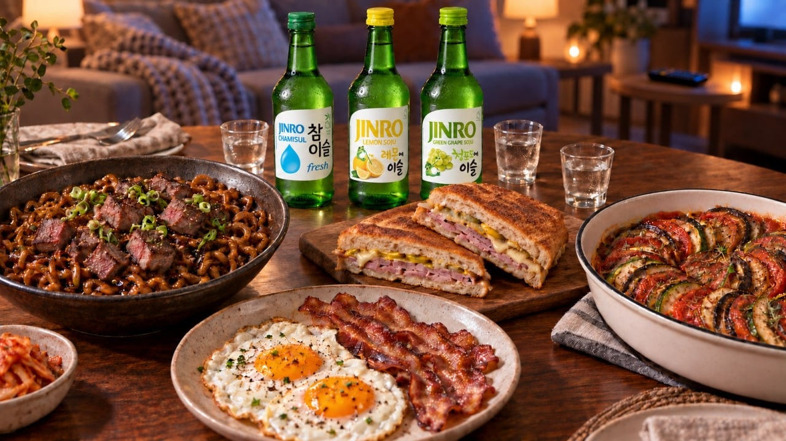
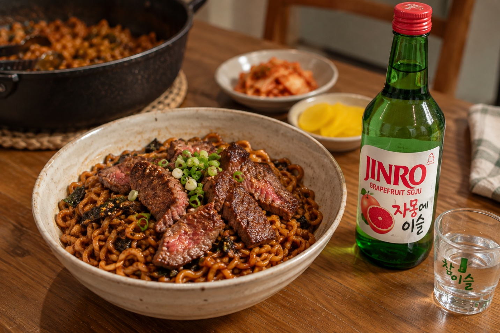
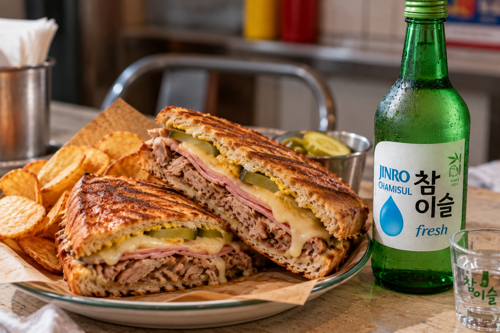
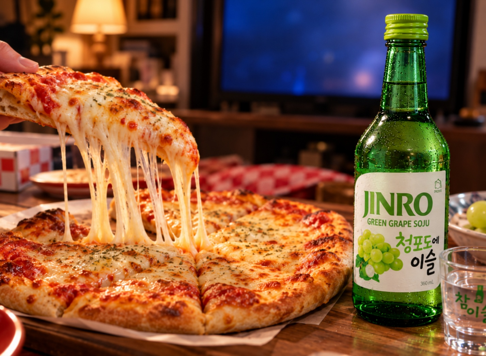
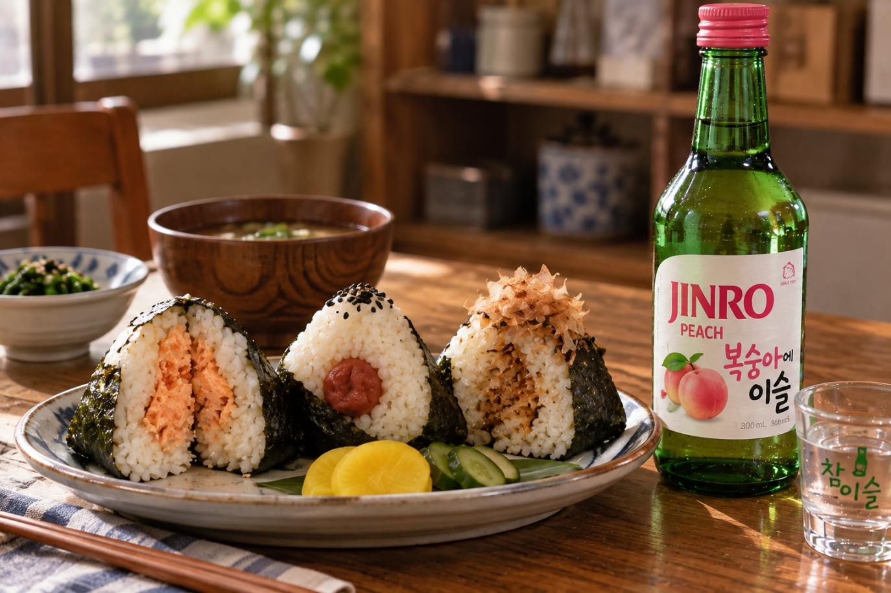

跟著 JINRO，把電影美食搬上餐桌
從《寄生上流》的炸醬烏龍麵、《五星主廚快餐車》的古巴三明治，到《小鬼當家》的起司披薩，以及《海鷗食堂》的飯糰。我們精選四道搶盡鏡頭的電影美食，帶你認識它們的真面目，再為每一道料理搭配一款 JINRO。

你是否也曾看完一部電影，對片中美食的記憶，比劇情還深刻？
有些料理，會讓你在片尾字幕一出現時，就忍不住打開搜尋欄：「那是什麼？」「真的有那麼好吃嗎？」於是，銀幕上的一道菜先成了網路迷因，再變成食譜影片，最後端上了我們自家的餐桌。
今天，我們挑選了四道一眼就能認出的電影美食，聊聊它們究竟是什麼、該怎麼享用，以及適合搭配哪一款 JINRO。今晚的電影之夜，就這樣安排好了。
🎬 《寄生上流》（Parasite）｜炸醬烏龍麵（Jjapaguri，又稱 Ram-don）
《寄生上流》讓世界各地的觀眾認識了兩款韓國泡麵。炸醬烏龍麵是把韓式炸醬麵 Chapagetti 和辣味海鮮麵 Neoguri 放進同一鍋煮，再拌在一起的料理。原本只是韓國人會在家製作的吃法，卻因為片中的富家太太要求加上韓牛沙朗，而一躍成為經典。英文字幕將它譯為「ram-don」，把 ramen（拉麵）和 udon（烏龍麵）兩個字結合起來，更讓這道料理聲名大噪。
做法也很簡單。將兩款麵一起煮熟，瀝去大部分的水，只留少許，再倒入調味粉，開火拌勻即可。沒有沙朗牛肉？也可以用家裡現有的其他牛肉代替。甜鹹濃郁的炸醬，碰上辣味海鮮湯底的鮮辣勁道，正是甜、鹹、辣的經典組合。
推薦搭配 → JINRO Grapefruit

吃過濃郁的炸醬和油脂豐富的牛肉後，最適合來一口清爽的。JINRO Grapefruit 帶著微苦微甜的柑橘香氣，俐落地平衡厚重滋味，讓下一口依然美味。
🎬 《五星主廚快餐車》（Chef）｜古巴三明治
一位主廚辭去餐廳工作，開著一輛餐車橫越美國。餐車上的招牌是什麼？就是古巴三明治，又稱 Cubano。還有個小知識：這部電影的料理顧問，是以 Kogi 餐車聞名的韓裔美籍主廚 Roy Choi。
顧名思義，古巴三明治源自古巴移民的飲食文化。將以大蒜與柑橘醃漬的 Mojo 烤豬肉，連同火腿、瑞士起司、酸黃瓜和芥末醬層層堆疊，再於麵包外側抹上奶油，加壓烘烤。外皮變得薄脆，內部則由融化的起司將所有配料緊緊連在一起。刀子切下時發出的酥脆聲，才是這份三明治最精彩的瞬間。
在家製作時，用平底鍋煎烤，再壓上一個厚重的鍋子，也能做出效果。
推薦搭配 → JINRO Chamisul Fresh

豬肉、火腿、起司、奶油。一份滋味如此豐富的三明治，就需要最清爽純淨的搭配。JINRO Chamisul Fresh 與酸黃瓜的酸香相互呼應，平衡油潤口感，讓你吃到最後一口也不覺得膩。
🎬 《小鬼當家》（Home Alone）｜起司披薩
這是一部每逢佳節都會重看的電影，也是一部每次看完，都讓人想吃披薩的電影。
其實，片中的一切都是從一份起司披薩開始的。出發旅行前一晚，凱文的哥哥吃掉了他期待已久的原味起司披薩，接著便引發一場混亂。後來，獨自在家的凱文，終於為自己點了一整份起司披薩。
這裡的起司披薩，就是經典美式的「原味起司披薩」：在番茄醬上鋪滿莫札瑞拉起司，是最單純的披薩。也正因如此，你能專心感受起司濃郁的鹹香，以及牽絲的魅力。拿起一片披薩，起司拉得長長的卻仍不斷開，那一刻，絕對值得拍下來。
推薦搭配 → JINRO Green Grape

以起司為主角的披薩，與明亮的果香格外合拍。JINRO Green Grape 的清新甜味，讓濃郁起司的口感變得輕盈，手也自然而然地伸向下一片。
🎬 《海鷗食堂》（Kamome Diner）｜日式飯糰
赫爾辛基一條小巷裡，有間小小的食堂。即使一位客人也沒有，老闆娘幸惠仍堅持把飯糰留在菜單上。沒有什麼驚天動地的情節，卻讓人看完就餓了。這是一部經典的療癒電影。
Onigiri，就是日式飯糰。在溫熱的白飯中放入餡料，用雙手捏成三角形，再包上香脆的海苔。片中幸惠製作的飯糰，只有三種口味：
- 鮭魚 — 烤出香氣後，再剝成小塊
- 梅干 — 酸得讓人忍不住皺起臉的醃梅子
- 柴魚 — 將鮮味十足的柴魚片拌入醬油
不花俏，卻一口就能明白，為什麼它是撫慰人心的食物。把三種口味放在同一個盤子裡，一一品嚐比較吧。
推薦搭配 → JINRO Peach

鹹香帶酸的飯糰，很適合搭配柔和多汁的甜味。JINRO Peach 輕柔地調和梅干的酸勁，留下甜美尾韻，就像一部靜謐電影散場後，仍在心中延續的餘韻。
你的電影之夜，想怎麼過？
電影裡的食物之所以特別，是因為它承載著場景中的情緒：富裕人家鍋中料理的緊張感、餐車旅程的興奮、獨處時的自由，以及小食堂裡的溫暖。
今晚，就選一部最讓你嘴饞的電影，親手做出片中的料理。在旁邊擺上一瓶 JINRO，銀幕上的那一幕，便會在你的餐桌上再次上演。
想探索更多世界各地的美食與燒酒搭配，歡迎關注 JINRO 官方全球社群頻道。
免責聲明：本內容僅供已達法定飲酒年齡的讀者閱覽。JINRO 致力於介紹燒酒在世界各地文化與慶祝場合中的意義，並支持健康、負責任的飲酒文化。請適量飲酒，酒後切勿駕車。文中提及電影僅為介紹美食，JINRO 與其製作方或發行商並無關聯。餐酒搭配僅供參考。